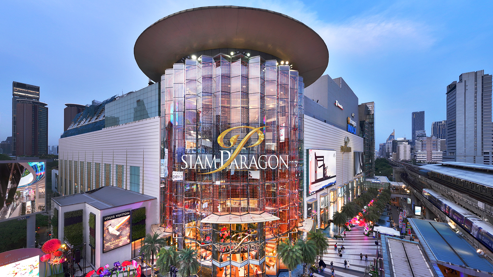
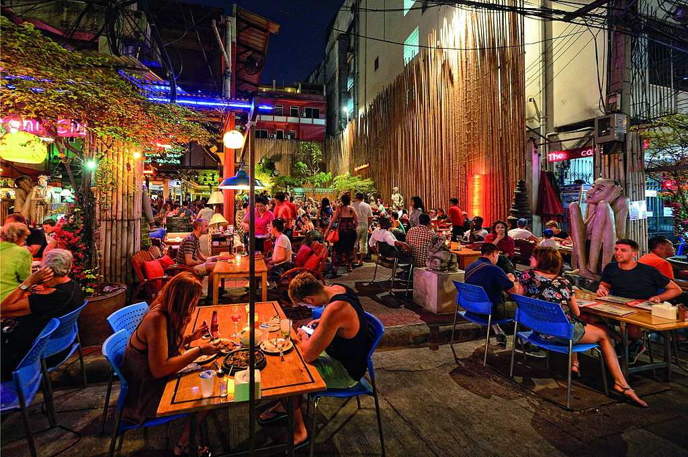

Day 1: Temples & Riverside Exploration
- Morning: Grand Palace, Wat Pho
- Lunch: Riverside restaurants near Tha Tien Pier
- Afternoon: Wat Arun, Chao Phraya River Cruise
- Evening: Dinner at Asiatique The Riverfront
Day 2: City Life & Markets
- Morning: Chatuchak Market / Or Tor Kor Market
- Lunch: Street food (mango sticky rice, pad thai)
- Afternoon: Jim Thompson House, Siam Paragon
- Evening: Dinner at Rooftop Bar/Restaurant

Day 3: Modern Bangkok & Local Experiences
- Morning: Bang Krachao, Erawan Shrine
- Lunch: Chinatown or Rod Fai Market
- Afternoon: Museum of Siam, spa session
- Evening: Chinatown Night Food Tour, Khao San Road
